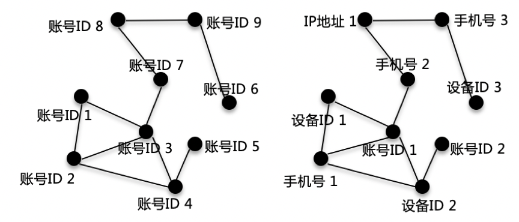

导读
所谓黑灰产，包含网络黑产、灰色两条产业链，随着互联网的飞速发展，网络黑灰产也在不断发展，当前网络黑灰产已经形成了一个平台化、专业化、精细化，相互独立又紧密协作的产业链。从近几年多起重大网络安全事故看，黑灰产已经不再局限在半公开化的纯攻击模式，而是转化成为敛财工具和商业竞争的不良手段，据不完全统计，当前网络黑灰产的市场规模已经超过千亿元人民币，在这千亿级的市场规模下，发展出了非常多的细分领域，如木马病毒，养号刷单，薅羊毛，电信诈骗，知识盗版，流量劫持等。
各互联网平台为了防止被网络黑灰产攻击，开发了很多防御及识别技术，最常被广大用户感知到的验证码技术就是其中之一，在验证码技术背后，还有非常多的识别方法，例如通过规则引擎依据防攻击规则进行分析拦截，通过行为序列建模对单次请求进行黑灰产行为判定，通过图谱关系挖掘用户之间的相关性以识别黑灰产团伙，基于层次聚类、均值聚类、高斯混合等聚类模型对黑灰产攻击进行无监督识别，这些方法均能在不同程度上对黑灰产起到识别和防御作用。
基于以上黑灰产攻击特点，提出了一种基于社群编码的黑灰产攻击识别方法，社群发现部分基于图关系，编码部分引入了大规模的图嵌入表示学习方法，相比于已有的图谱关系挖掘，可以更好的识别和度量未知攻击，而且也提出了基于异步准实时的工程化算法实现，对频繁变化的黑灰产攻击有更强的应变灵活性。
社群结构
提出的基于社群编码的黑灰产攻击识别方法，在原有图谱挖掘的基础上，引入了大规模的图嵌入表示学习技术，除了能挖掘出黑灰产本身的关联关系，还能识别出潜在的黑灰产网络结构，让识别过程更加准确稳定。
该方法基于的关联图有两种，分别是同构图和异构图，这也是黑灰产挖掘过程中经常会遇到的关联图结构。
同构图表示网络图中所有节点的类型都相同，如对于一个账号关联而言，网络图中的节点有都是用户的账号ID。异构图则表示网络图中所有节点的类型可能是不同的，如在账号关联网络中，网络图中的节点除了账号ID外，可能还有IP地址，设备号，手机号等其他类型的节点。
下图表示了同构和异构的两种示意图，同构图表示所有账号ID组成的网络结构，异构图表示由账号ID、设备ID、手机号和IP地址组成的网络结构。

对于图结构网络，除了边关系，节点自身也会很多固有属性，如对于一个账号ID的UGC场景，会有不同的活跃时间，不同的业务场景（如浏览图文，浏览视频，发表图文等），不同的操作类型（如评论，点赞，转发等）。这类节点自身属性如下图中表格所示。
为了便于说明一般情况，后文说明中默认全是异构图结构，因为同构图作为异构图的一种特殊情况，即使是实际推广中是同构图，也不影响使用异构图的方法进行分析。实际场景中图网络关系如下图所示。
为了识别出关联结构图中的社群，目前已经有比较多的识别方法，常用的有基于节点的统计特征，基于节点出入度的分布变化，基于关联边的自定义权重，人工标注等方法，此类方法能识别很多关联社群，但是由于图谱关联中难以定义边的权重，会存在较多误召，所以在实践中基于已有社群挖掘结果进行编码以提升黑灰产识别效果，同时嵌入式图编码还可以基于节点的邻居关系可以进行无监督相似性判断。
图嵌入式编码
图嵌入式编码是一种将节点编码成向量的node2vec方法，采用的图嵌入式编码方法为斯坦福大学William L. Hamilton、Rex Ying和Jure Leskovec等人在2016年提出的GraphSAGE，与node2vec相比较而言，node2vec是在图的节点级别上进行嵌入，GraphSAGE则是在整个图的级别上进行嵌入。GraphSAGE同时利用节点特征信息和结构信息得到Graph Embedding的映射，相比之前保存映射结果的方法，GraphSAGE保存了生成embedding的映射，可扩展性更强，对于节点分类和链接预测问题的表现也更加突出。
GraphSAGE算法流程包含三个步骤。
（1）对图中每个节点邻居节点进行采样，因为每个节点的度是不一致的，所以为了计算高效，为每个节点采样固定数量的邻居。
（2）根据聚合函数聚合邻居顶点蕴含的信息。
（3）得到图中各顶点的向量表示供下游任务使用。
下图为该算法作者在论文中提供的采样和聚合示意图。
对于使用传统方法已经识别出的社群，使用下图所示的方法进行节点采样。每一层的node由上一层生成，与本层无关，如此，1层的账号ID 1已经聚合了0层设备ID 1和手机号2的信息，在二层，手机号2再聚合IP地址1的信息，经过两层采样，就可以扩展到账号ID 1的2阶邻居包含设备ID 1、手机号1、设备ID 2、手机号2、账号ID 2和IP地址1的所有信息。
采样过程中固定采样层数（本实践使用2层）和每层采样点的节点数（如邻居节点数上限为200个），可以控制每次采样过程对内存的消耗和运算耗时，该方法适用于大规模数据集，对大数据集下的黑灰产社群挖掘非常有效。
这里采用的聚合函数为均值聚合，直接对目标节点和所有邻居emebdding中每个维度取平均，后再非线性转换，原论文中相应函数表达式如下：
其主要思想是将目标顶点和邻居顶点的第k−1层向量进行拼接，然后对向量的每个维度进行求均值的操作，将得到的结果做一次非线性变换产生目标顶点的第k层表示向量。
不同的聚合函数计算方法不同，除均值聚合函数外，还有池化聚合器、LSTM聚合器等可选，经过测试，对于黑灰产社群挖掘而言，不同的聚合函数差异并不明显。
如此，经过以上对黑灰产社群的采样与邻居聚合，可以得到每一个节点在网络图上的向量表示。如上面采用图示中账号ID 1的向量就包含了设备ID 1、手机号1、设备ID 2、手机号2、账号ID 2和IP地址1的网络结构信息，同时包含了这些ID在不同时间点、不同业务场景、不同操作类型上的行为特征。
模型训练
基于上面的采样和聚合函数，可以开始进行参数学习，GraphSAGE不同的损失函数代表了不同的参数学习方法，如下所示损失函数就是一种无监督的损失，倾向于使得相邻的顶点有相似的表示，相互远离的顶点的表示差异变大。
上式表示节点 u 和随机游走到的邻居节点 v 有相似的embedding表示，而与经过负采样得到的不相邻节点 vn 有不相似的embedding表示。
对于无监督损失学习到的节点embedding，可继续供下游任务使用，本实践就是采用的该方法。当然，对于特定分类任务，也可以使用特定的损失函数，如使用交叉熵进行分类预测。
通过节点的统计特征，人工标注确定了正负样本，使用节点的编码向量作为特征进行分类模型训练，下图所示即为部分数据的挖掘结果可视化。
直观而言，对于社群团伙的挖掘还是比较合理的，总体分为三类，红色为一社群，黄色为一社群，其余（绿色）自动归为一类。
工程化实现
为了在工业界实际应中发挥社群编码的价值，提出了一种异步准实时的黑灰产识别方案。下图表示了这种识别方案的流程结构。
一个用户开始请求客户端，可以采集到用户的关键因子信息，如账号ID、IP地址、设备号、手机号等，将这部分日志信息写入暂存区，暂存区存储着所有在过去10分钟（也可以是其他某个时间段，一般而言，日志量越大，暂存区时间越短，反之越长）内请求过该客户端的用户的关键因子信息。
超过10分钟的关键信息则存入离线的分区日志库，基于分区日志库进行图谱构建，黑灰产社群挖掘，社群编码，以及使用向量表示训练分类模型，分类模型可以不用实时训练，定期使用过去一段时间的分区日志训练即可。
对于还在暂存区的关键因子，会对请求的用户进行实时图谱构建，以该用户为中心进行节点采样并做向量表示，使用已经训练好的分类模型对该用户的表示向量进行黑灰产预测，如果预测为正常用户，则允许用户在客户端上的操作，如果预测该用户为黑灰产用户，则拒绝该用户进行客户端操作。
下图是训练部分较详细的过程：
下图是预测部分的较详细过程：
创新点
本实践提出的一种基于社群编码的黑灰产攻击识别方法，主要创新技术点包括：
基于社群编码对黑灰产进行有监督识别的方法，相比于既有图谱挖掘算法，该方法不直接依赖于单个节点属性，而是将整个社群的关联结构编码到一个表示向量中，对黑灰产的表示更加准确，而且对于历史上未出现的黑灰产账号，也能通过网络结构之间的相似性，通过向量表示进行识别。同时可以有效避免因为噪声关系（如黑灰产账号连接了商场wifi）导致的错误识别。
基于图编码结果，还可以对黑灰产进行无监督建模的社群挖掘，使用编码后的向量表示进行无监督学习（如密度聚类和层次聚类），可以识别出黑灰产在IP、账号ID、手机号及设备号之间的内在关系，挖掘出相似黑灰产组成的聚类簇。
使用暂存区将大规模的图嵌入表示学习方法与小数据集的异步预测结合在一起，并使用编码后的有监督模型进行快速预测，为工业化应用提供了参考方法。
部分实践效果
搭建的因子编码模型包含有IP地址、cookie标识、设备、账号ID、手机号等共计5个关键因子，编码的特征包含十余个关联信息。
按10分钟为一个暂存区窗口，获取因子数量150w+，编码的关系数量500w+，编码的向量长度240+。
经过人工校验，对embding结果使用有监督方式例行化产出ip维度的风险，使用其他策略交叉校验，该策略准确率能达到94%左右，相比之前扩召回7%左右。
完～